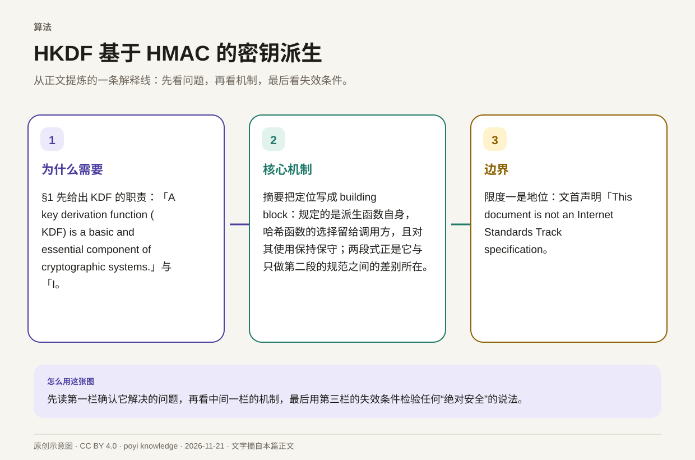
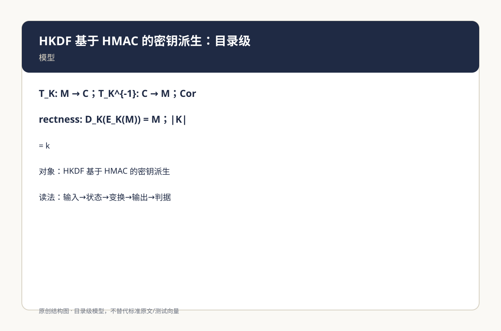

原理与机制
算法：HKDF 基于 HMAC 的密钥派生（HMAC-based Extract-and-Expand Key Derivation）。RFC 5869 的定义句在摘要：「This document specifies a simple Hashed Message Authentication Code (HMAC)-based key derivation function (HKDF), which can be used as a building block in various protocols and applications.」同段交代取向：「The key derivation function (KDF) is intended to support a wide range of applications and requirements, and is conservative in its use of cryptographic hash functions.」结构在 §1：「HKDF follows the "extract-then-expand" paradigm, where the KDF logically consists of two modules.」即它规定的是两段式派生，不是密钥建立协议。摘要把定位写成 building block：规定的是派生函数自身，哈希函数的选择留给调用方，且对其使用保持保守；两段式正是它与只做第二段的规范之间的差别所在。

为什么重要
§1 先给出 KDF 的职责：「A key derivation function (KDF) is a basic and essential component of cryptographic systems.」与「Its goal is to take some source of initial keying material and derive from it one or more cryptographically strong secret keys.」风险在输入本身：「In many applications, the input keying material is not necessarily distributed uniformly, and the attacker may have some partial knowledge about it (for example, a Diffie-Hellman value computed by a key exchange protocol) or even partial control of it (as in some entropy-gathering applications).」于是 extract 阶段的目的是：「the goal of the "extract" stage is to "concentrate" the possibly dispersed entropy of the input keying material into a short, but cryptographically strong, pseudorandom key」。对既有规范的批评也写在同节：「either only consider the second stage (expanding a pseudorandom key), or do not explicitly differentiate between the "extract" and "expand" stages, often resulting in design shortcomings.」几句合起来是理由：KDF 是基础部件，输入却未必均匀、甚至可能被对手部分控制，于是需要一个把分散熵集中起来的阶段；既有规范要么只做扩展、要么不区分两阶段，本文要补的正是这个位置。
应用与实例
两步各自在编号小节里定义：§2.2「HKDF-Extract(salt, IKM) -> PRK」，算法一行是「PRK = HMAC-Hash(salt, IKM)」；§2.3「HKDF-Expand(PRK, info, L) -> OKM」。参数义务也随之写明：salt 是「optional salt value (a non-secret random value); if not provided, it is set to a string of HashLen zeros.」，info 是「optional context and application specific information (can be a zero-length string)」，其作用见 §3.2：「Its main objective is to bind the derived key material to application- and context-specific information.」salt 并非可省则省，§3.1 说「HKDF is defined to operate with and without random salt.」但同一节只是鼓励设计者尽量提供：「designers of applications are therefore encouraged to provide salt values to HKDF if such values can be obtained by the application.」输出长度也有上限，§2.3 写作「length of output keying material in octets (<= 255*HashLen)」。

边界与攻击面
限度一是地位：文首声明「This document is not an Internet Standards Track specification; it is published for informational purposes.」页眉 Category 亦为 Informational，且 §1 明确「It is not intended as a call to change existing protocols and does not change or update existing specifications using this KDF.」限度二是能力：§4 承认并非所有应用都能直接套用 HKDF，并把低熵输入列为一个显著例子——「The extract step in HKDF can concentrate existing entropy but cannot amplify entropy.」并且「HKDF naturally accommodates the use of salt; however, a slowing down mechanism is not part of this specification.」需要口令派生的应用被指向别处：「Applications interested in a password-based KDF should consider whether, for example, [PKCS5] meets their needs better than HKDF.」限度三是证明强度：§5 写「This analysis, however, does not imply the absolute security of any scheme, and it depends heavily on the strength of the underlying hash function and on modeling choices.」设计理由另在论文中，「An exposition of all of these aspects is beyond the scope of this document.」
历史与背景
页眉按行连读给出作者与编号：「Internet Engineering Task Force (IETF) H.Krawczyk」、「Request for Comments: 5869 IBM Research」与「Category: Informational P.Eronen」，日期行为 May 2010，标题「HMAC-based Extract-and-Expand Key Derivation Function (HKDF)」，版权为「Copyright (c) 2010 IETF Trust and the persons identified as the document authors.」本文件未声明 Obsoletes 或 Updates 任何 RFC。§6 记下评审与向量的来源：「The authors would like to thank members of the CFRG (Crypto Forum Research Group) list for their useful comments, and to Dan Harkins for providing test vectors.」门板事实合起来是：编号、两位作者及其机构、日期 May 2010、类别 Informational 与 ISSN 行；文件不含 Obsoletes 或 Updates 标注，评审与测试向量的出处则记在 §6。
逐步示例与核验
形式模型与复算步骤
[C=E_K(P;r),\qquad P=D_K(C)]
HKDF 基于 HMAC 的密钥派生的公开参数、密钥/随机数与消息；变量说明：P 明文，C 密文，K 密钥，r 随机化参数。1.按算法规范编码输入。2.在密钥控制下执行轮函数。3.输出密文并检查长度与格式。边界：公式只覆盖已登记的参数与假设；参数取值、标准版本和实现细节仍以来源为准。
参考出处
- Wikipedia search entry for HKDF 基于 HMAC 的密钥派生. https://zh.wikipedia.org/w/index.php?search=HKDF%20%E5%9F%BA%E4%BA%8E%20HMAC%20%E7%9A%84%E5%AF%86%E9%92%A5%E6%B4%BE%E7%94%9F
- Handbook of Applied Cryptography (Menezes, van Oorschot, Vanstone). https://www.cacr.math.uwaterloo.ca/hac/